Slide text
Speaker notes / extracted notes
Show slide thumbnails
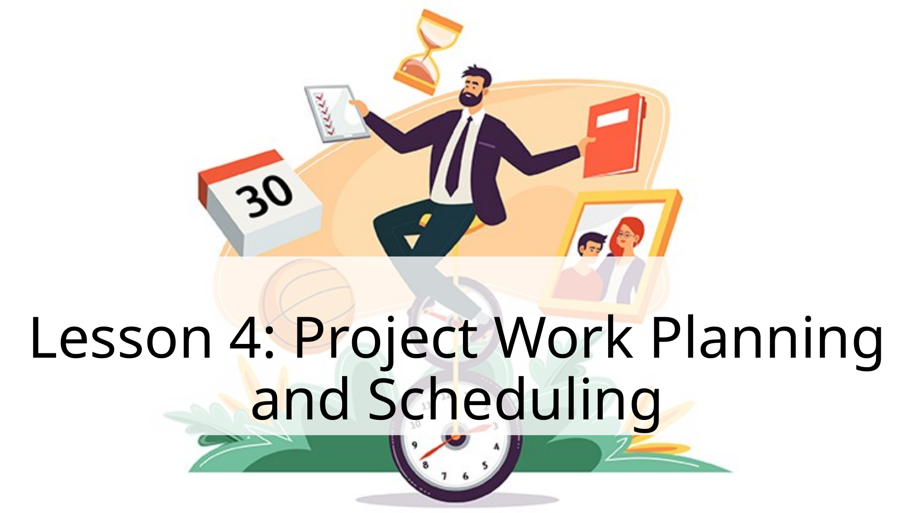
1. Lesson 4: Project Work Planning and Schedulin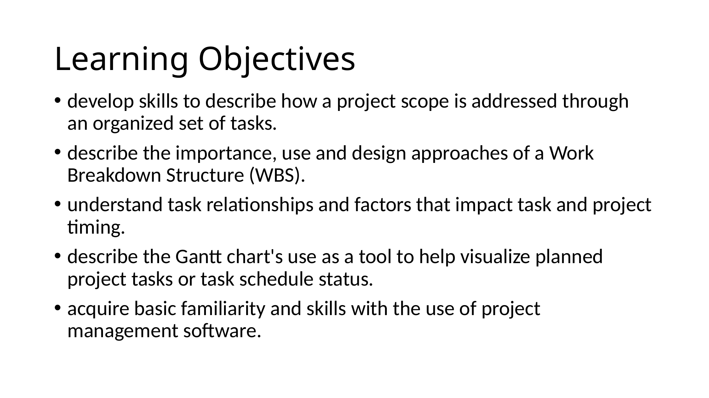
2. Learning Objectives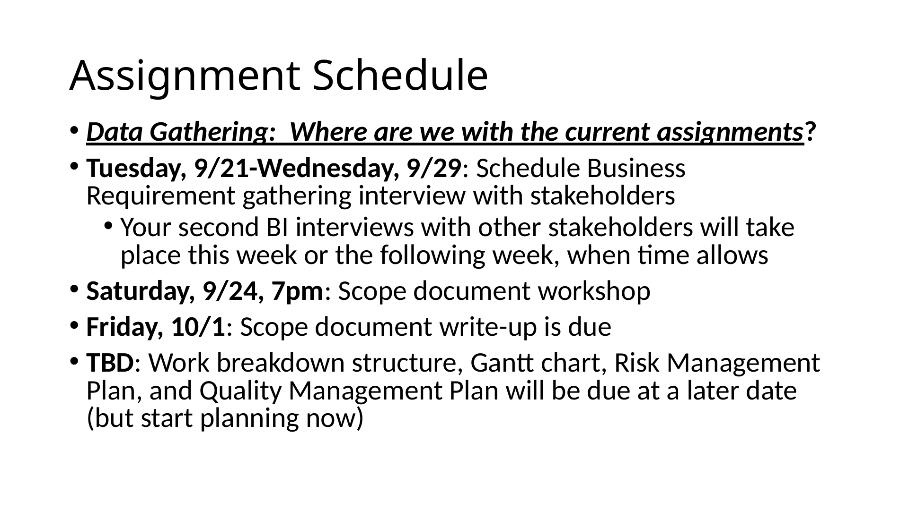
3. Assignment Schedule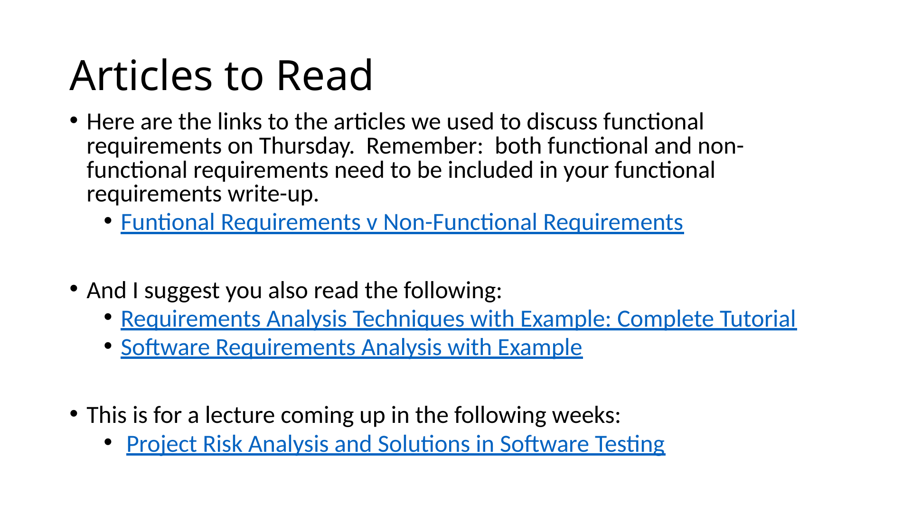
4. Articles to Read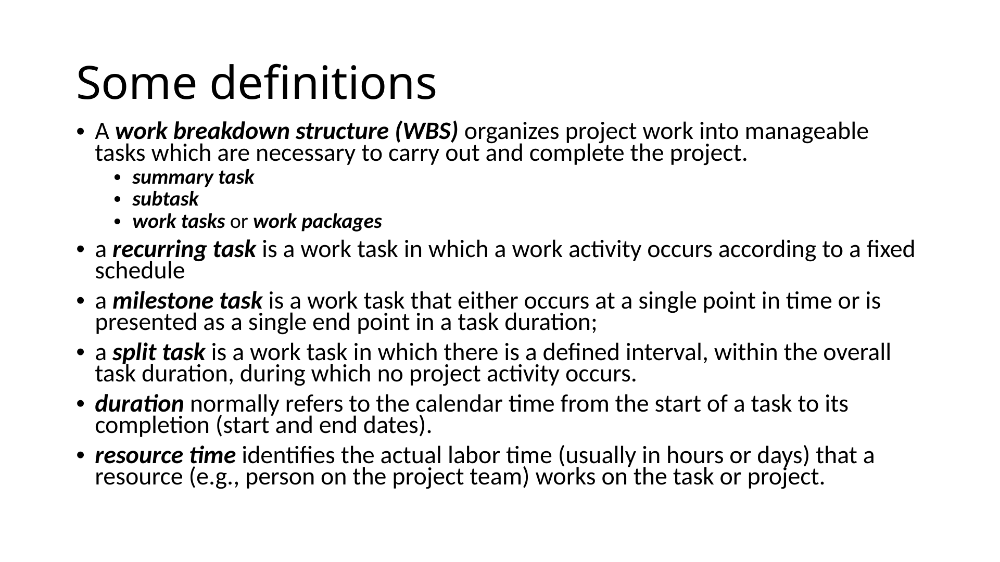
5. Some definitions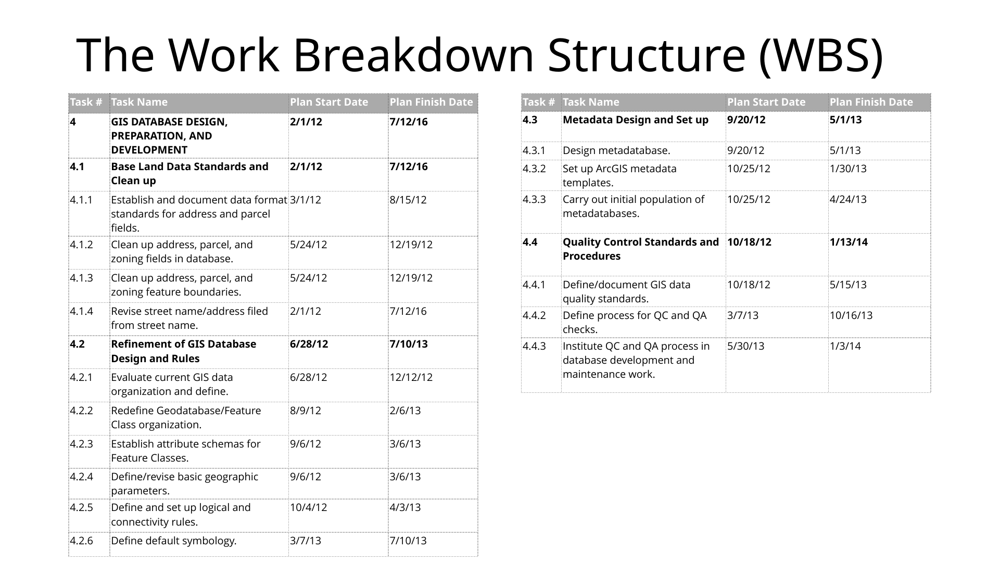
6. The Work Breakdown Structure (WBS)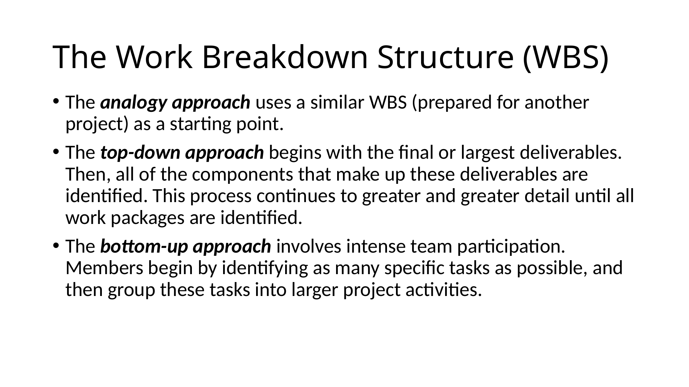
7. The Work Breakdown Structure (WBS)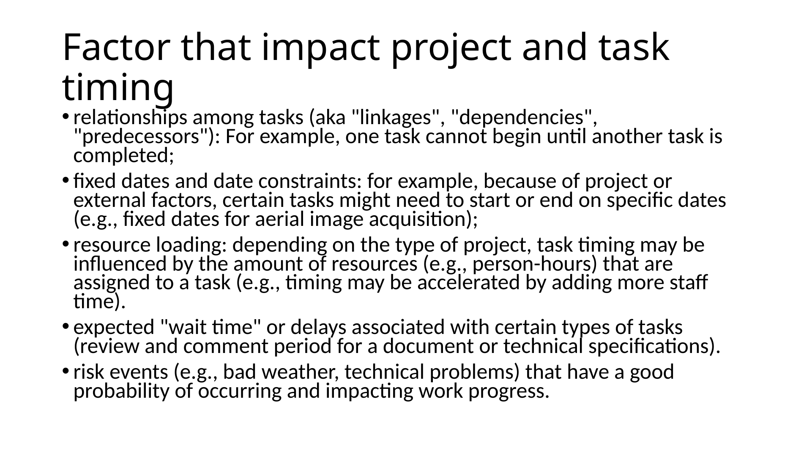
8. Factor that impact project and task timing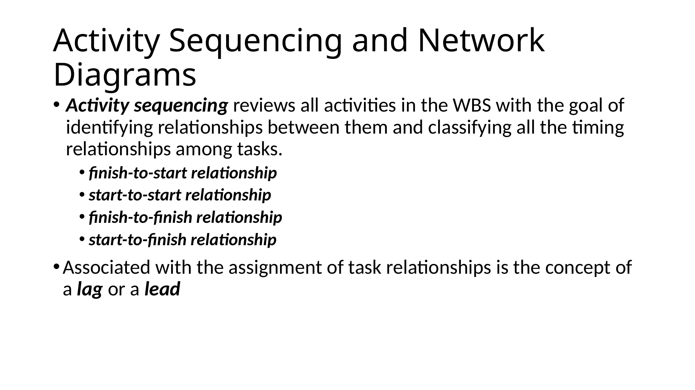
9. Activity Sequencing and Network Diagrams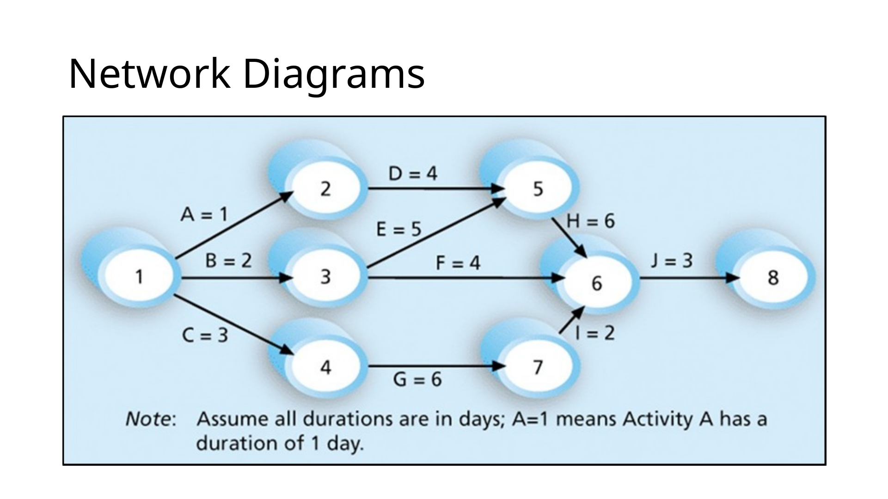
10. Network Diagrams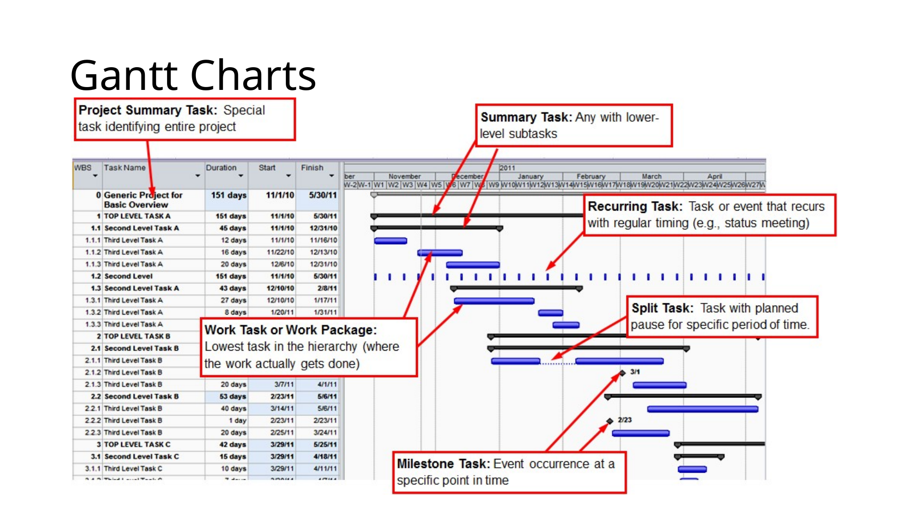
11. Gantt Charts